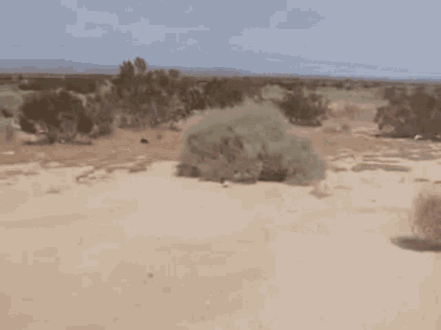
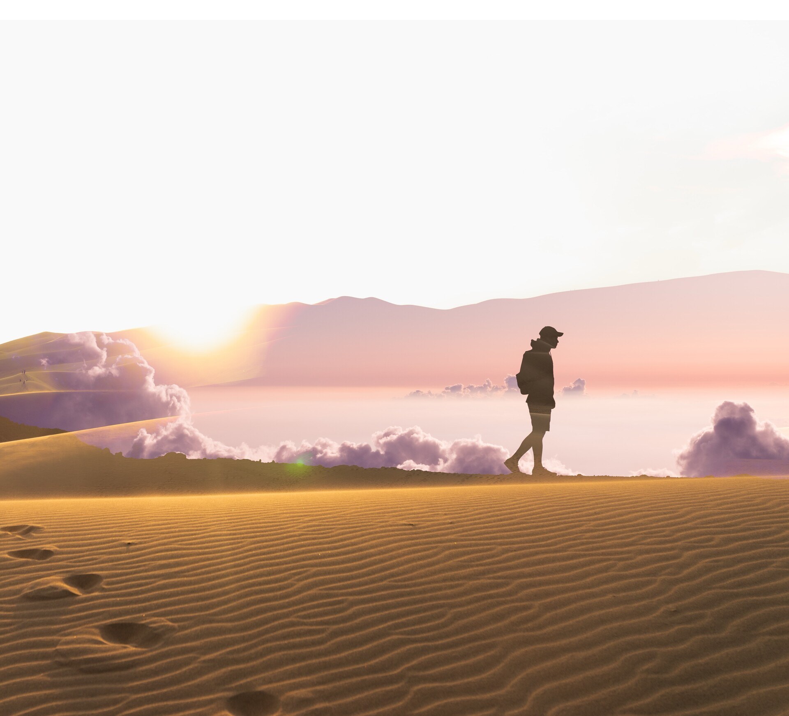
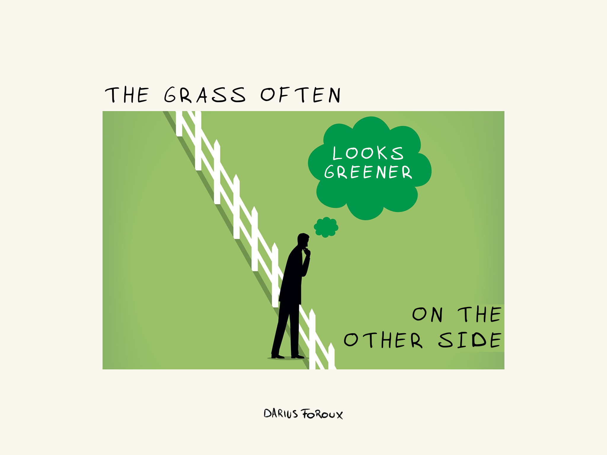

The Great American Southwest – A perspective
Cameron Seebeck
Opinion
9/6/2025
A Desert Wasteland
Ask any American about the Southwest- and you’re sure to get conflicting answers. While not everyone may view it in the same light, there is one widespread view, perhaps pervasive even, that pollutes the minds of travelers and hitchhikers alike- vast, open nothingness. It is so culturally ingrained into our minds to perceive the American West as a metaphorical and literal wasteland, that it is not surprising how many are quick to imagine it.
So, whats to blame? Perhaps it’s the classic image of a Western film- desert varnish, cowboys and shootouts. Maybe it’s exposure to the desert, or lack thereof. Regardless of what constitutes people’s preconceived notions of the Southwest, I strongly believe that these perceptions should be challenged. If you’re someone who is reading this and may be thinking, “Gee, I sure disagree, the southwest is beautiful!” Then, you are in good company.
The Beauty and Nature of “Nothing”
While I wholeheartedly disagree that the American Southwest is full of “nothing,” for the sake of the argument, lets pretend it was. Why should anyone choose to live, or even visit a place that’s almost universally known for being desolate? Well, if you’re not too fond of philosophy, feel free to skip this section.
Why do solitary confinement inmates go insane? Why is isolation even bad for us? If you’re asking these sorts of questions, the mental image of the vast open Sonoran Desert may not seem too far off from the same four walls of a padded cell. Surely, these things are not one in the same, but just as they are different, they can both be reframed in our minds.
Imagine this: your average city goer wakes up in the morning, and is met with the sight of a bustling, loud city outside their apartment window. Perhaps they’ll check their phone, mindlessly scroll through social media for a while, then get ready for work. On their way to work, they’ll be met with endless honks, shouts and traffic. At work, they’re stimulated by coworkers, bosses and their confined cubicle. Each day, rinse and repeat. Upon reading this, I bet few would call this a varied life. Some would even go as far to call it simple, just as the image of a New York City pedestrian crosses their mind.
But, what if I told you that this life is the opposite of simple, and it’s the most varied situation one could find themselves in today in our modern world? If one truly wanted to live a simple life, would the desert be so accommodating? I believe so, and in my experience, the American southwest offers the perfect balance between a simple and varied life.
Nothing Full of Something
Growing up on Long Island, New York, moving to Arizona seemed almost ludicrous in practice. Friends, family and acquaintances alike were quick to question my decision to make such a drastic move. After all, we are comparing an Island to a desert here. Well, just as many people have, perhaps their minds were quick to picture this aforementioned “wasteland.”
However, can we really blame them? The media has portrayed the southwest region of the USA in such a light that few would dare challenge it. Well, I am here to challenge exactly that- and tell you why this is a fallacy. Yes- the desert has flat, open spaces where “nothing” thrives. But, as a surprise to some, the Southwest is dotted with regions of vast mountain ranges, raging rivers, large lakes and even forests met with snow. If this is reality, then why is our perception of the desert so… uniform?
Bryce Canyon. Sedona’s great painted rocks. Patagonia Lake. Coconino National Forest. And of course, the Grand Canyon’s millions of years of preserved history. These places all challenge the first image that comes to our minds when we think of “desert.” And so, they should be treated just the same as the vast open flats of Death Valley and many other regions like it. Just take one look at the diversity of desert wildlife, and you’ll quickly wonder why Death Valley is named that in the first place.
“The Grass is always Greener on the other side”
As much as I have advocated for our precious deserts, I realize I come from a very different place, surrounded by water, cities and infrastructure far different than Arizona’s sprawling geography. Therefore, we must all ask ourselves at the end of the day: Is the grass greener on the other side? What is new and exciting to one may be an everyday sight for another. And so, all we can do is appreciate experiences unbeknownst to us and be as objectively realistic about our surroundings as possible.
As a geologist, this problem is only exacerbated. I am most definitely predisposed to appreciate this landscape much more due to the abundance of exposed rocks and natural history. But- despite geology being such an integral part of my life, I believe everyone can learn to appreciate and better understand our Earth, its different environments, and how it pertains to our everyday lives and experiences. We are all one on this planet, and I believe it should be a duty of everyone to learn to love the places so distant to them they are only able to see it through a map.
Suggestions and Conclusion
So, if you’ve read this far, I hope you see the desert and the American southwest in a new light! I encourage everyone to go out and explore places they’ve only dreamt of, and experience things they never thought possible. Below are some suggested places to check out, particularly in Arizona, but all throughout the American Southwest:
Arizona
- Petrified Forest National Park
Utah
Nevada
Southern California
- Vasquez Rocks Natural Area and Nature Center
New Mexico
- Carlsbad Caverns National Park
West Texas